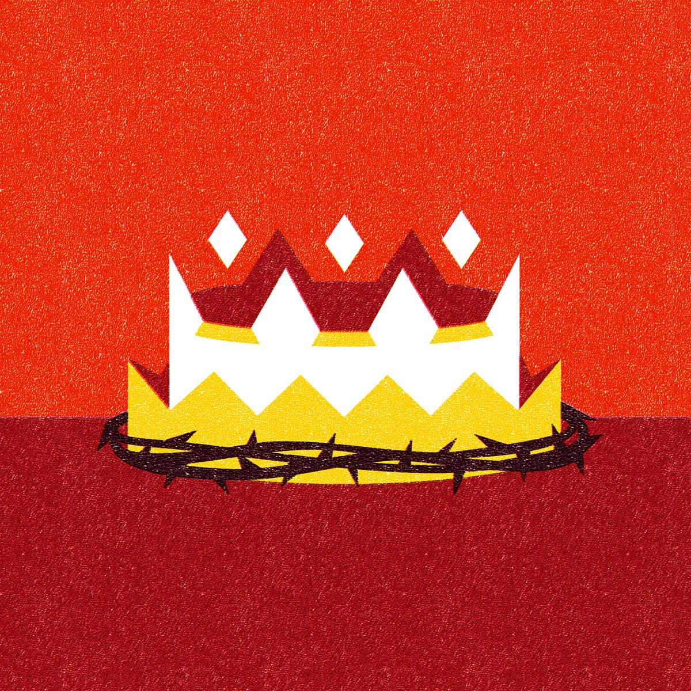

Sessão 1: Introdução a PauloSession 1: Introduction to Paul
Principais Lições
- As cartas de Paulo influenciaram o mundo e moldaram a civilização.Paul's letters have influenced the world and shaped civilization.
- Se as palavras de Paulo se tornaram demasiado familiares para nós, podemos mudar nosso foco e deixar suas palavras se tornarem estranhas e novas novamente à medida que aprendemos mais sobre Efésios.If Paul's words have become over-familiar to us, we can shift our focus and let his words become strange and new again as we learn more about Ephesians.
A Autoria das Cartas de Paulo
Colocar as cartas de Paulo em seu contexto do primeiro século reconfigura significativamente nossa percepção.Placing Paul's letters in their first-century context will reshape our perception significantly.
- As cartas tinham múltiplos autores. Os co-remetentes nomeados (Timóteo, Sóstenes, Silas) eram colaboradores do conteúdo e co-autores; Paulo é o remetente autorizador.Letters had multiple authors. The named co-senders (Timothy, Sosthenes, Silas) were contributors and co-authors, with Paul as the authorizing sender.
- As cartas foram compiladas comunitariamente ao longo do tempo, em etapas e sessões de grupo com os co-autores.Letters were compiled communally over time, created in stages and group sessions with the named co-authors.
- O material era empregado em múltiplos contextos — professores levavam tabuinhas de cera com anotações reutilizáveis.Material was employed in multiple contexts — teachers carried wax tablets with reusable notes.
- Há materiais compartilhados entre cartas (o material comum entre Colossenses e Efésios é um ótimo exemplo).There are shared materials between letters (the shared material between Colossians and Ephesians is a great example).
- Paulo usou um secretário para escrever suas cartas; o conjunto de habilidades era altamente especializado.Paul used a secretary to write his letters; the skill set required was highly specialized.
- As cartas passaram por múltiplos rascunhos até Paulo se agradar do produto final (2 Coríntios é um ótimo exemplo).Letters went through multiple drafts until Paul was pleased (2 Corinthians is a great example).
- As cartas se tornaram parte de coleções, com cópias retidas em tabuinhas.Letters became part of collections, with copies retained in notebooks.
- As cartas eram caras de produzir — 1 Coríntios custaria cerca de US$ 2.300 para escrever e enviar hoje.Letters were expensive to produce — 1 Corinthians would have required about $2,300 to write and send today.
- Os portadores de cartas tiveram papel-chave na recepção — liam em voz alta, explicavam passagens difíceis e respondiam perguntas (Febe para Romanos, Eutico para Efésios, Epafras para Filipenses, Onésimo para Colossenses e Filémon).Letter carriers played a key role — they read aloud, explained difficult parts, and answered questions (Phoebe for Romans, Eutychus for Ephesians, Epaphras for Philippians, Onesimus for Colossians and Philemon).

Pergunta de Reflexão
Descreva sua familiaridade com as cartas de Paulo. Quais desafios você enfrentou ao lê-las?Describe your familiarity with the letters of Paul. What challenges have you faced when reading his letters?